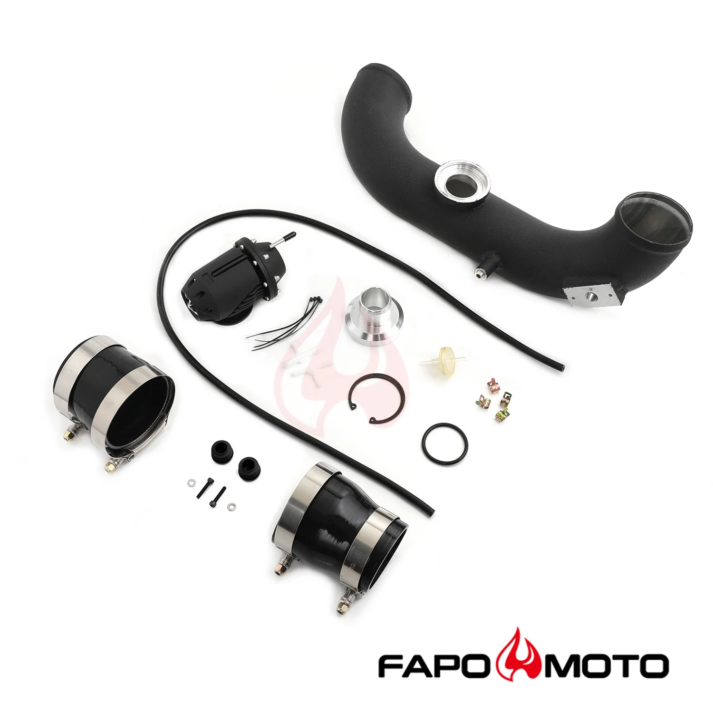

1 / 9FAPO rura dolotowa Kit Do BMW N54 135i 335i 335is 1M E82 E88 E90 E92 E93 SSQV BOV BLOW OFF VALVE Intake Hard Pipe Black FE591320
Zastosowanie: Kompatybilny z BMW E82 Coupe N54 135i z lat 2008-2010, w tym 1M Kompatybilny z BMW E88 Cabrio N54 135i z lat 2008-2010 Kompatybilny z 2007-2010 BMW E90 Sedan N54 335i / 335xi Kompatybilny z BMW E91 Touring N54 335i / 335xi z lat 2006-2010 Kompatybilny z 2006-2010 BMW E92 Coupe N54 335i / 335xi Kompatybilny z 2006-2010 BMW E93 kabriolet N54 335i / 335xi Kompatybilny z BMW E92 Coupe N54 335is z lat 2011-…
Application: Compatible with 2008-2010 BMW E82 Coupe N54 135i including 1M Compatible with 2008-2010 BMW E88 Convertible N54 135i Compatible with 2007-2010 BMW E90 Sedan N54 335i / 335xi Compatible with 2006-2010 BMW E91 Touring N54 335i / 335xi Compatible with 2006-2010 BMW E92 Coupe N54 335i / 335xi Compatible with 2006-2010 BMW E93 Convertible N54 335i / 335xi Compatible with 2011-2013 BMW E92 Coupe N54 335is Features: Increased BHP, more efficient airflow from turbo, improved throttle response. Best blow-off valve for street-driven turbocharged and supercharged vehicles, supports up to 1800hp per valve. CNC machined from 6061 aluminum, large valve with Viton O-ring clamped in place to prevent sticking. Valve and seal use Viton O-ring clamped in place for durability. Valve stem and guide are Teflon-lubricated and hard anodized for superior wear resistance. Actuator has high-temp silicone Nomex-reinforced diaphragm for extended life. Each BOV supports up to 35 PSI, ideal for high-performance boosted vehicles. 100% brand new, never used or installed. Includes SSQV BOV and all accessories shown in photos. 1-year warranty for any manufacturing defect.
1099,99 PLN
Opis produktu
Zastosowanie:
- Kompatybilny z BMW E82 Coupe N54 135i z lat 2008-2010, w tym 1M
- Kompatybilny z BMW E88 Cabrio N54 135i z lat 2008-2010
- Kompatybilny z 2007-2010 BMW E90 Sedan N54 335i / 335xi
- Kompatybilny z BMW E91 Touring N54 335i / 335xi z lat 2006-2010
- Kompatybilny z 2006-2010 BMW E92 Coupe N54 335i / 335xi
- Kompatybilny z 2006-2010 BMW E93 kabriolet N54 335i / 335xi
- Kompatybilny z BMW E92 Coupe N54 335is z lat 2011-2013
Cechy produktu:
- Zwiększona moc, wydajniejszy przepływ powietrza z turbosprężarki, poprawiona reakcja przepustnicy.
- Najlepszy zawór wydmuchowy do pojazdów ulicznych z turbodoładowaniem i doładowaniem, obsługuje do 1800 KM na zawór.
- Obrabiany CNC z aluminium 6061, duży zawór z pierścieniem typu O-ring z Vitonu zaciśniętym na miejscu, aby zapobiec sklejaniu się.
- W zaworze i uszczelce zastosowano pierścień typu O-ring z Vitonu zaciśnięty na miejscu, co zapewnia trwałość.
- Trzpień zaworu i prowadnica są smarowane teflonem i twardo anodowane, co zapewnia doskonałą odporność na zużycie.
- Siłownik posiada wysokotemperaturową membranę silikonową wzmocnioną Nomexem, co zapewnia dłuższą żywotność.
- Każdy BOV obsługuje ciśnienie do 35 PSI, co jest idealne dla pojazdów o wysokich osiągach.
- 100% fabrycznie nowy, nigdy nie używany ani nie instalowany.
- Zawiera SSQV BOV i wszystkie akcesoria pokazane na zdjęciach.
- 1 rok gwarancji na wszelkie wady produkcyjne.
Application:
- Compatible with 2008-2010 BMW E82 Coupe N54 135i including 1M
- Compatible with 2008-2010 BMW E88 Convertible N54 135i
- Compatible with 2007-2010 BMW E90 Sedan N54 335i / 335xi
- Compatible with 2006-2010 BMW E91 Touring N54 335i / 335xi
- Compatible with 2006-2010 BMW E92 Coupe N54 335i / 335xi
- Compatible with 2006-2010 BMW E93 Convertible N54 335i / 335xi
- Compatible with 2011-2013 BMW E92 Coupe N54 335is
Features:
- Increased BHP, more efficient airflow from turbo, improved throttle response.
- Best blow-off valve for street-driven turbocharged and supercharged vehicles, supports up to 1800hp per valve.
- CNC machined from 6061 aluminum, large valve with Viton O-ring clamped in place to prevent sticking.
- Valve and seal use Viton O-ring clamped in place for durability.
- Valve stem and guide are Teflon-lubricated and hard anodized for superior wear resistance.
- Actuator has high-temp silicone Nomex-reinforced diaphragm for extended life.
- Each BOV supports up to 35 PSI, ideal for high-performance boosted vehicles.
- 100% brand new, never used or installed.
- Includes SSQV BOV and all accessories shown in photos.
- 1-year warranty for any manufacturing defect.
FAPO Polska
Ten produkt obsługujemy lokalnie
Autoryzowana obsługa
FAPO Polska prowadzi katalog, kontakt i zamówienia bez odsyłania klienta do zewnętrznych sklepów.
Dobór po aucie
Sprawdzamy dopasowanie produktu do pojazdu, rocznika i wersji przed finalizacją zamówienia.
Wsparcie po zakupie
Masz kontakt w Polsce w sprawach zamówień, wysyłki, gwarancji i zwrotów.